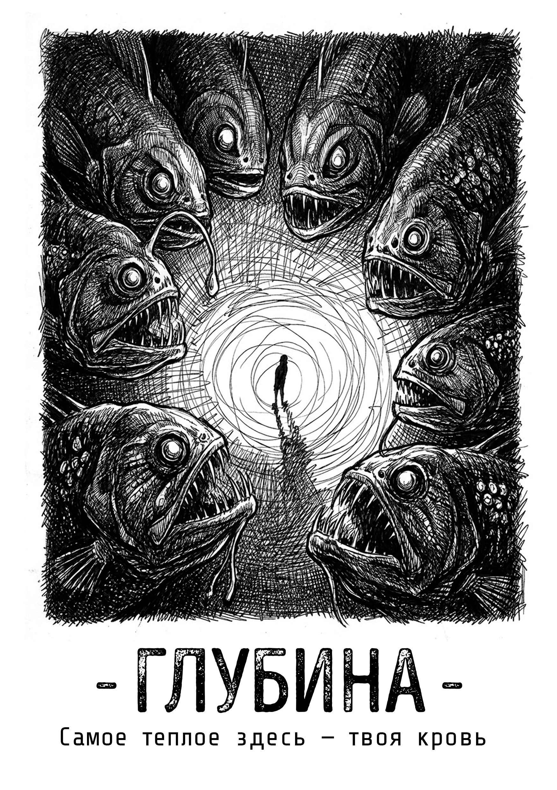
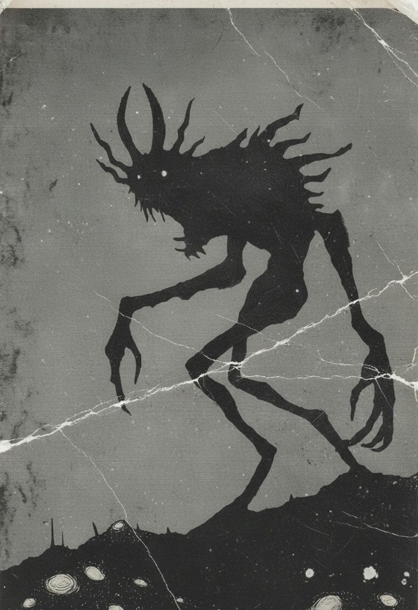

Брось кубик
Число на к6 определяет, сколько событий произойдёт за день. Выпала единица — убери один из десяти жетонов ремонта батискафа.
Соло настольная ролевая игра
Километры воды над головой. Весь экипаж мёртв. Связь оборвана. А за переборкой что-то пытается войти.
Начать погружениеОдин игрок. Колода карт. Последняя надежда.

Последний на станции
«Глубина-141-Л» — самая глубокая буровая в мире. Во время бурения экипаж наткнулся на нечто, пришедшее из глубины. Теперь ты — единственный выживший в стальной коробке на дне океана.
Ты можешь чинить, баррикадироваться, пытаться подать сигнал. Но корпорация не отвечает. Твоя надежда — сломанный спасательный батискаф.
Игра об изоляции, человеческой стойкости и желании выжить несмотря ни на что.

Из Лога Станции
«Остальные члены экипажа мертвы.
Мне удалось выбросить существ через аварийный шлюз, но они живы. Они снаружи.
Они пытаются вернуться.»
ДЕНЬ 1
СТАНЦИЯ «ГЛУБИНА-141-Л»
БОРТИНЖЕНЕР, ВЕДУ ЗАПИСЬ
Как играть
История рождается из карт и твоих ответов.
Ведущий не нужен. Только ты и глубина.
Число на к6 определяет, сколько событий произойдёт за день. Выпала единица — убери один из десяти жетонов ремонта батискафа.
Переворачивай их по одной. Найди задание в книге и ответь в дневнике: что ты делаешь, о чём думаешь, что чувствуешь?
В конце дня заполни Лог Станции. Коротко. По делу. А завтра снова брось кубик — если переживёшь эту ночь.
Твоё тело. Твой разум. Воспоминания о доме и способность не сдаваться.
Корпус, шлюзы, энергия, связь. Всё железо, которое держит океан снаружи.
Погибшие товарищи. Их вещи, голоса и вопросы, на которые никто не ответит.
Их свет в темноте. Скрежет за стеной. Мир снаружи пытается войти.
Перед погружением
Приготовь всё необходимое.
Открой книгу. Сделай первую запись.
PDF · 36 страниц · на русском языке